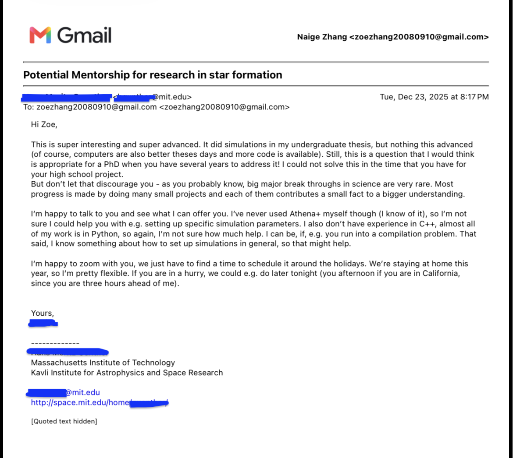

Approaching December, we finally made a small pipeline of running the simulation. We derived all parameters from previous papers, and we were super excited to see the SFE curve finally appear.
But the result surprised us. The curve was climbing upward, completely opposite to our hypothesis that it would decrease.
What's really going wrong?
Christmas Eve, I was at my best friend's house in Vancouver. I checked my email.

I started crying, then suddenly ran outside and shouted to my friend, “Oh My Gosh, I can't imagine what just landed on me.”
If you have ever experienced that same feeling of lacking resources, trying to reach out, but slowly becoming desperate after emails without responses, you will understand what it means when someone finally sees you (i would also like to use the word "discover").
There are many high schoolers who buy mentorship through paid research programs, gain connections with professors, and even publish papers in Nature, Science, and IEEE. But what about the students without training, without paid research institutes, and without mentors? Does that mean they cannot do research?
In total, I only met Mr. Moritz three times throughout our entire research process, but each meeting helped me navigate a major challenge, reigniting my passion for research. The biggest technical lesson I learned in astophysics simulation was "Don't try to include as many complex parameters as possible to make it seems real. Instead, focus on the simplest case and isolate only the part you care about the most. Learning to simplify is harder than making it more complex.